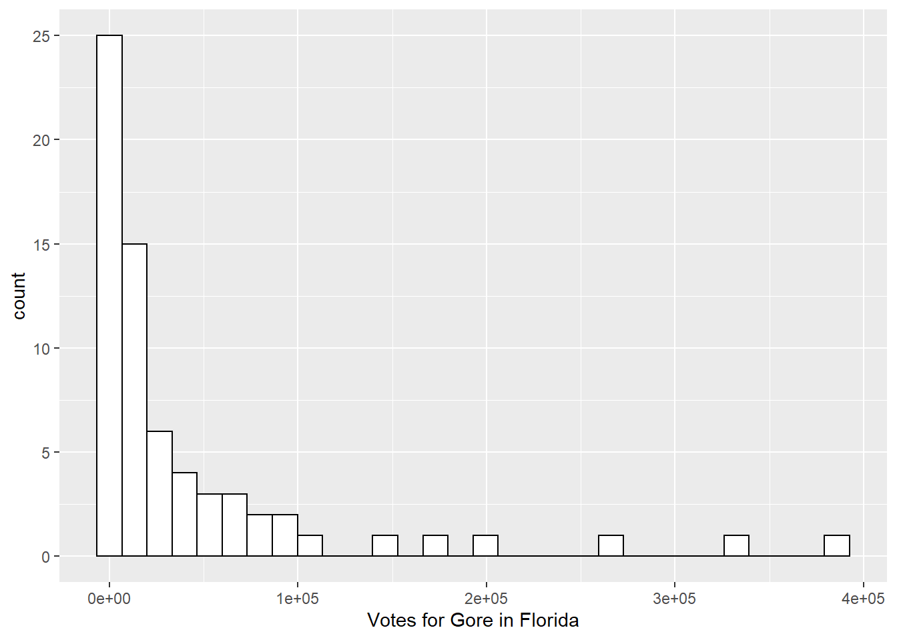
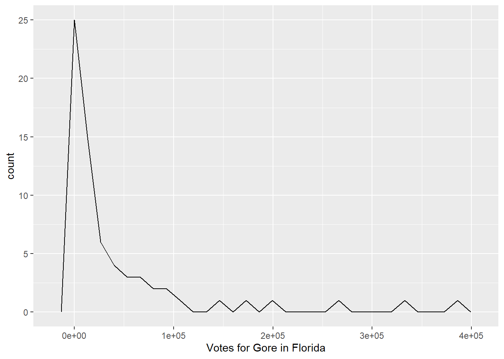
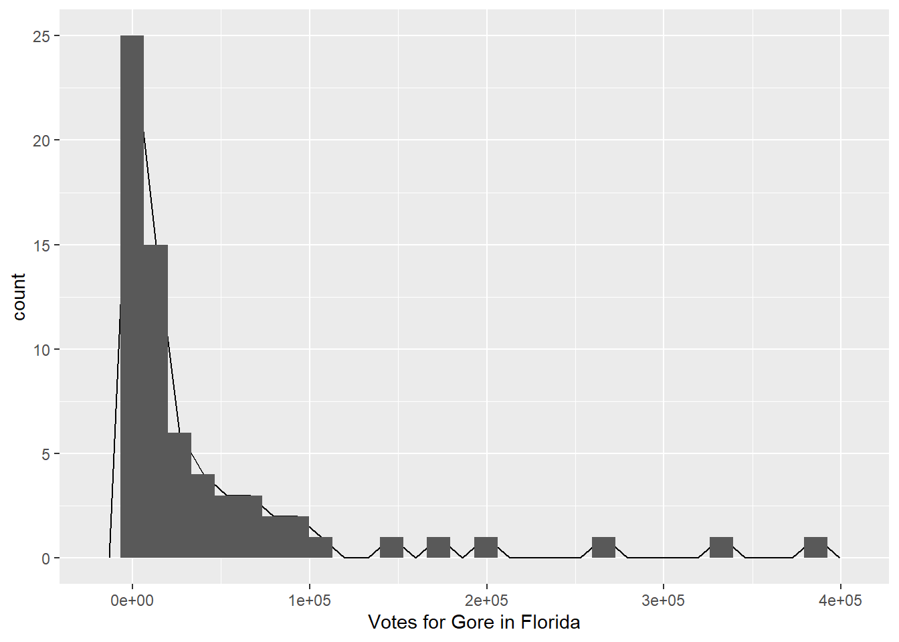

library(tidyverse)── Attaching packages ─────────────────────────────────────── tidyverse 1.3.2 ──
✔ ggplot2 3.3.6 ✔ purrr 0.3.4
✔ tibble 3.1.8 ✔ dplyr 1.0.9
✔ tidyr 1.2.0 ✔ stringr 1.4.1
✔ readr 2.1.2 ✔ forcats 0.5.2
── Conflicts ────────────────────────────────────────── tidyverse_conflicts() ──
✖ dplyr::filter() masks stats::filter()
✖ dplyr::lag() masks stats::lag()pres_df <- read_table("data/PRES2000.txt")
── Column specification ────────────────────────────────────────────────────────
cols(
Gore = col_double(),
Bush = col_double(),
Buchanan = col_double(),
Nader = col_double(),
Other = col_double(),
County = col_character()
)Warning: 67 parsing failures.
row col expected actual file
1 -- 6 columns 7 columns 'data/PRES2000.txt'
2 -- 6 columns 7 columns 'data/PRES2000.txt'
3 -- 6 columns 7 columns 'data/PRES2000.txt'
4 -- 6 columns 7 columns 'data/PRES2000.txt'
5 -- 6 columns 7 columns 'data/PRES2000.txt'
... ... ......... ......... ...................
See problems(...) for more details.## don't worry about the `read_table` function....yet
head(pres_df)# A tibble: 6 × 6
Gore Bush Buchanan Nader Other County
<dbl> <dbl> <dbl> <dbl> <dbl> <chr>
1 47365 34124 263 3226 751 ALACHUA
2 2392 5610 73 53 26 BAKER
3 18850 38637 248 828 242 BAY
4 3075 5414 65 84 35 BRADFORD
5 97318 115185 570 4470 852 BREVARD
6 386561 177323 788 7101 1623 BROWAR ggplot(data = pres_df, aes(x = Gore)) +
geom_histogram(colour = "black", fill = "white") +
xlab("Votes for Gore in Florida")`stat_bin()` using `bins = 30`. Pick better value with `binwidth`.
ggplot(data = pres_df, aes(x = Gore)) +
geom_freqpoly(colour = "black") +
xlab("Votes for Gore in Florida") `stat_bin()` using `bins = 30`. Pick better value with `binwidth`.
ggplot(data = pres_df, aes(x = Gore)) +
geom_freqpoly(colour = "black") +
xlab("Votes for Gore in Florida") +
geom_histogram() `stat_bin()` using `bins = 30`. Pick better value with `binwidth`.
`stat_bin()` using `bins = 30`. Pick better value with `binwidth`.